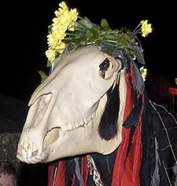

<!DOCTYPE html PUBLIC "-//W3C//DTD XHTML 1.0 Strict//EN" "http://www.w3.org/TR/xhtml1/DTD/xhtml1-strict.dtd">

<html xmlns="http://www.w3.org/1999/xhtml" xml:lang="en" lang="en">
<head>

<meta name="Description" content="" />
<meta name="Keywords" content="" />
<meta http-equiv="Content-Type" content="text/html; charset=iso-8859-1" />
<meta name="Distribution" content="Global" />
<meta name="Robots" content="index,follow" />

<link rel="stylesheet" href="../images/css/layout.css" type="text/css" />
<LINK REL="SHORTCUT ICON" HREF="../images/favicon.ico" />
<title>Purely Penzance | Annual Events and Festivals in Penzance and Penwith</title>
<style type="text/css">
<!--
.style1 {font-size: 85%}
-->
</style>
</head>
</html>


<body>
<!-- wrap starts here -->
<div id="wrap">

	<div id="top-bg"></div>
				
	<!--header -->
	<div id="header">			
		
	  <div id="header-links">
		<p>
			<a href="../index.html">Home</a> | 
			<a href="../contact.html">Contact</a> | 
			<a href="../about.html">About</a>		</p>		
	  </div>	<!--header ends-->					
	</div>
		
	<div id="header-photo"></div>		
		<!-- navigation starts-->	
	<div  id="nav">
		<ul>
			<li><a href="../index.html"> Home</a></li>
			<li><a href="../town.html">The Town</a></li>
   		  <li><a href="../shopping.html">Shopping</a></li>
			<li><a href="../winedine.html">Food &amp; Drink</a></li>
			<li><a href="../entertainment.html">Entertainment</a></li>		
	    <li><a href="../tourism.html">Tourism</a></li>
			<li><a href="../wheretostay.html">Where to Stay</a></li>		
	  </ul>
	<!-- navigation ends-->	
	</div>					
			
<!-- content-wrap starts -->
	<div id="content-wrap">
	
		<div id="main">
		  <h2><a name="top">Annual Events in Penzance</a></h2>
		  <p>&nbsp;</p>
		  <p>Below is a list of local annual events.</p>
		  <p><u>April</u></p>
		  <ul type="disc">
            <li>Trevithick Day, Camborne.<u></u></li>
	      </ul>
		  <p><u>May</u></p>
		  <ul type="disc">
            <li>Padstow Obby Oss</li>
		    <li><a href="http://www.westcornwallevents.co.uk/festival/helston_flora_day.html" title="Helston Flora Day cornwall event" target="_blank">Helston Flora Day</a></li>
		    <li>Daphne du Maurier Festival, Fowey</li>
		    <li>Run to the Sun Festival, Newquay</li>
	      </ul>
		  <p><u><a href="festivals.html"></a>June</u></p>
		  <ul type="disc">
            <li>Royal Cornwall       Show, Wadebridge</li>
		    <li><a href="http://www.westcornwallevents.co.uk/festival/penzance_mazey_day_golowan.html" title="golowan mazey day 2012 2013" target="_blank">The Golowan Festival</a></li>
		    <li><a href="http://www.westcornwallevents.co.uk/festival/penzance_mazey_day_golowan.html" title="mazey day penzance 2012 2013">Mazy Day</a></li>
		    <li>Falmouth sea shanty festival</li>
		    <li>Polpero festival</li>
		    <li>Looe Festival by the sea</li>
		    <li>Mevagissey Feats Week</li>
		    <li>Murdoch Day, Redruth<u></u></li>
		    <li><a href="../thetown/villages/marazion.html">Marazion</a> Carnival</li>
	      </ul>
		  <p><u>July</u></p>
		  <ul type="disc">
            <li>Stithians Argriculture show, Stithians<u></u></li>
		    <li>Launceston and District agricultural show<u></u></li>
		    <li><a href="http://www.westcornwallevents.co.uk/festival/st_just_lafrowda_festival.html" title="lafrowda festival st. just guide">Lafrowda Day, St Just</a></li>
		    <li>RNAS Culdrose Air Day, Culdrose Airfield,       Helston<u></u></li>
		    <li>Charlestown Regatta</li>
		    <li>Looe Carnival Week</li>
		    <li>Wadebridge Carnival</li>
		    <li>Padstow Carnival</li>
	      </ul>
		  <p align="center">
<script type="text/javascript"><!--
google_ad_client = "pub-7067632003386523";
/* 468x60, purely main body */
google_ad_slot = "9375823843";
google_ad_width = 468;
google_ad_height = 60;
//-->
</script>
<script type="text/javascript"
src="https://pagead2.googlesyndication.com/pagead/show_ads.js">
</script></p>
<p><u>August</u></p>
		  <ul type="disc">
            <li>Tintagel Carnival Week</li>
		    <li>Annual Fuchsia Show, Camborne</li>
		    <li>Ripcurl Boardmasters Surf, Skate &amp; Music       festival at Fistral Beach and Watergate Bay.</li>
		    <li>Bude Carnival</li>
		    <li>Fowey Regatta Week</li>
		    <li>Bude Jazz Festival</li>
		    <li><a href="http://www.westcornwallevents.co.uk/festival/newlyn_fish_festival.html" title="newlyn fish festival august bank holiday" target="_blank">Newlyn Fish Festival</a></li>
	      </ul>
		  <p><u>September</u></p>
		  <ul type="disc">
            <li>Dehwelans Festival (Cornish Homecoming)</li>
		    <li>Cornish Gorseth</li>
		    <li>St Ives September Festival</li>
		    <li>Newquay Fish Festival</li>
		    <li>Truro Carnival</li>
		    <li>Looe Valley Walking Festival</li>
		    <li>Cornwalls food and drink festival, Truro</li>
	      </ul>
		  <p><u>October</u></p>
		  <ul type="disc">
            <li>Food &amp; Craft Festival, Boscastle</li>
		    <li>Falmouth Oyster Festival</li>
		    <li>Roseland festival</li>
		    <li>Falmouth Beer Festival</li>
	      </ul>
		  <p><u>November</u></p>
		  <ul type="disc">
            <li>Bonfire Night, Penzance football club</li>
	      </ul>
		  <p><u>December</u></p>
		  <ul type="disc">
            <li>Penzance Christmas Lights</li>
            <li><a href="http://www.westcornwallevents.co.uk/festival/montol_festival_penzance.html" title="the penzance newlyn montol festival">The Montol Festival</a></li>
		    <li><a href="../thetown/villages/newlyn.html">Newlyn</a> Christmas Lights</li>
		    <li><a href="../thetown/villages/moushole.html">Mousehole</a> Christmas Lights</li>
		    <li>Truro City of Lights</li>
		    <li>Tom Bawcock&rsquo;s Eve, Mousehole (23rd)</li>
		  </ul>
		  <p align="center" class="post-footer"><a href="../index.html">Home</a> | <a href="../tourism.html">Tourism Home</a> | <a href="beaches.html">Beaches</a> | <a href="attractions.html">Attractions</a> | <a href="festivals.html">Festivals</a> | <a href="towntrail.html">Town Trail</a> <br />
	      <a href="touristinfo.html">Tourist Information Centre</a></p>
		  <div align="center"><span class="style1">images - wikipedia.org</span></div>
		</div>
				
<div id="sidebar">
		  <ul class="sidemenu">
	          <li><a href="../tourism.html">Tourism Home</a></li>
	          <li><a href="beaches.html">Beaches</a></li>
	          <li><a href="attractions.html">Attractions</a></li>
	          <li><a href="festivals.html">Festivals &amp; Traditions</a></li>
	          <li><a href="towntrail.html">Penzance Town Trail</a></li>
	          <li><a href="events.html"><strong>Events</strong></a></li>
            <li><a href="touristinfo.html">Tourist Information Centre</a></li>
            </ul>
      <h3>          Navigation</h3>
<ul class="sidemenu">
				<li><a href="../index.html">Home</a></li>
			  <li><a href="../town.html">The Town</a></li>
			  <li><a href="../shopping.html">Shopping</a></li>
			  <li><a href="../winedine.html">Food &amp; Drink</a></li>
			  <li><a href="../entertainment.html">Entertainment</a></li>
			  <li><a href="../tourism.html">Tourism</a></li>
	    <li><a href="../wheretostay.html">Accommodation</a></li>
			  <li><a href="../art_perform.html">Arts &amp; Performance</a></li><li><a href="../sport.html">Sport</a></li>
			  <li><a href="../community.html">Community</a></li>
			<li><a href="../commerce.html">Commerce</a></li>
			  <li><a href="../travel.html">Travel</a></li>
<li><a href="https://www.purelypenzance.co.uk/events.html">Events in West Cornwall</a></li>
<li><a href="https://www.purelypenzance.co.uk/search/search_engine_penzance.html">Search Purely Penzance</a></li></li>
      <div align="center"><strong><a href="https://rcm-uk.amazon.co.uk/e/cm?lt1=_blank&amp;bc1=000000&amp;IS2=1&amp;bg1=FFFFFF&amp;fc1=000000&amp;lc1=0000FF&amp;t=aandeuk-21&amp;o=2&amp;p=8&amp;l=as4&amp;m=amazon&amp;f=ifr&amp;ref=ss_til&amp;asins=0319241165" title="Penzance map and guide" target="_blank">Buy the Penzance <br />
        OS
        Map Online<br />
      </a></strong><a href="https://rcm-uk.amazon.co.uk/e/cm?lt1=_blank&amp;bc1=000000&amp;IS2=1&amp;bg1=FFFFFF&amp;fc1=000000&amp;lc1=0000FF&amp;t=aandeuk-21&amp;o=2&amp;p=8&amp;l=as4&amp;m=amazon&amp;f=ifr&amp;ref=ss_til&amp;asins=0319241165"></a></div>
</ul>
</div>		
		
		
	<!-- content-wrap ends-->	
	</div>
		
	<!-- footer starts -->		
	<div id="footer-wrap">
		<div id="footer-columns">
	
			<div class="col3">
			  <ul>
					<li><a href="../advertising/link_exchange_penzance.html">Link Exchange with Purely Penzance</a></li>
				<li><a href="../maps.html">Maps</a></li>
			  </ul>
		  </div>

			<div class="col3-center">
			  <ul><li><a href="../index.html">Home</a></li>
					<li><a href="#top">Top</a></li>
			  </ul>
		  </div>

	    <div class="col3">
			  <ul>
			    <li><a href="../weather.html">Weather &amp; Tides</a></li>
				<li><a href="../advertise.html">Advertising</a></li>
		  </ul>
		  </div>
		<!-- footer-columns ends -->
		</div>	
	
	  <div id="footer-bottom">		
			<script type="text/javascript"><!--
google_ad_client = "pub-7067632003386523";
/* bottom banner */
google_ad_slot = "7602608539";
google_ad_width = 728;
google_ad_height = 90;
//-->
</script>
<script type="text/javascript"
src="https://pagead2.googlesyndication.com/pagead/show_ads.js">
</script>
  <br>
  &copy; 2013 | <a href="https://www.purelypenzance.co.uk/" title="Purely Penzance">Home</a>&nbsp;|&nbsp;<a href="https://www.purelypenzance.co.uk/contact.html" title="Contact Us">Contact</a>&nbsp;|&nbsp;<a href="https://www.purelypenzance.co.uk/about.html#privacy" title="Our Privacy Policy">Privacy</a> | <a href="https://www.purelypenzance.co.uk/advertise.html" title="West Cornwall Advertising">Advertise</a> | <a href="https://www.purelypenzance.co.uk/ppfacebook" title="Facebook" target="_blank">Facebook </a>| <a href="http://twitter.com/WestCornwall" title="Twitter" target="_blank">Twitter</a>
&nbsp;&nbsp;&nbsp;&nbsp;&nbsp;&nbsp;&nbsp;&nbsp;&nbsp;&nbsp;&nbsp;&nbsp;&nbsp;&nbsp;&nbsp;&nbsp;&nbsp;&nbsp;&nbsp;&nbsp;&nbsp;&nbsp;&nbsp;&nbsp;&nbsp;
 </div>
        </div>
		<!-- footer ends-->
</div>
<!-- wrap ends here -->
</div>

<!-- Start of StatCounter Code -->
<script type="text/javascript">
sc_project=3726811; 
sc_invisible=1; 
sc_partition=45; 
sc_security="832de869"; 
</script>

<script type="text/javascript" src="https://www.statcounter.com/counter/counter_xhtml.js"></script><noscript><div class="statcounter"><a href="http://www.statcounter.com/free_hit_counter.html" target="_blank"></a></div></noscript>
<!-- End of StatCounter Code -->
<script type="text/javascript">

  var _gaq = _gaq || [];
  _gaq.push(['_setAccount', 'UA-8692299-1']);
  _gaq.push(['_trackPageview']);

  (function() {
    var ga = document.createElement('script'); ga.type = 'text/javascript'; ga.async = true;
    ga.src = ('https:' == document.location.protocol ? 'https://ssl' : 'http://www') + '.google-analytics.com/ga.js';
    var s = document.getElementsByTagName('script')[0]; s.parentNode.insertBefore(ga, s);
  })();

</script>
</body>
</html>

